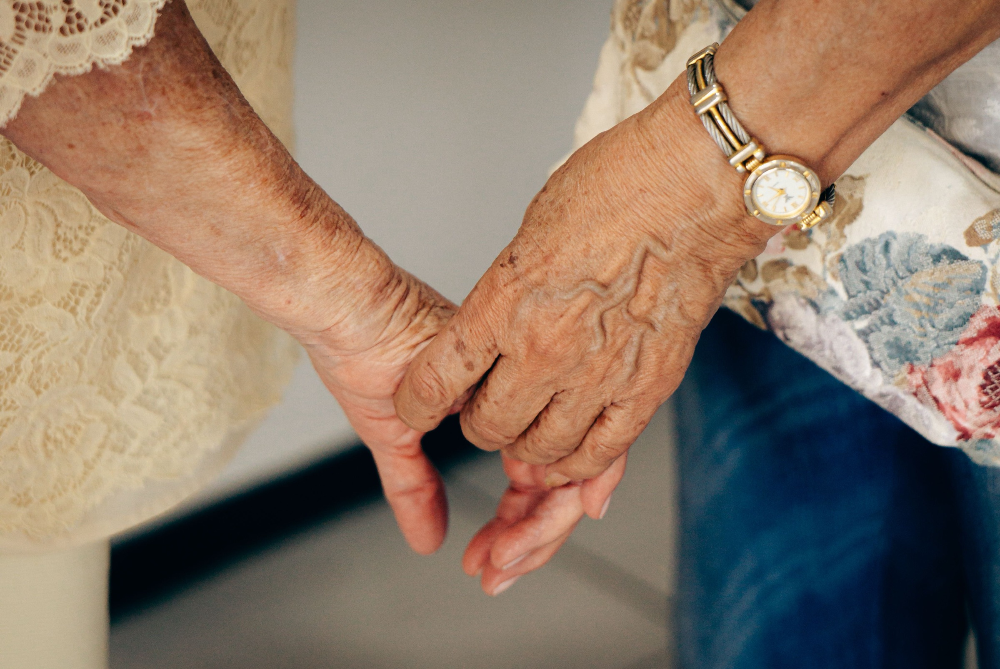
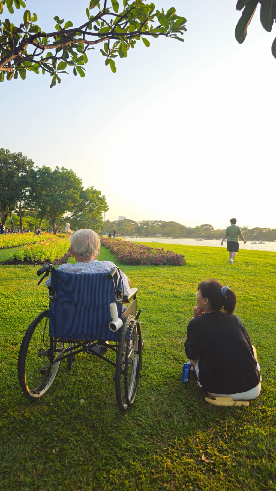
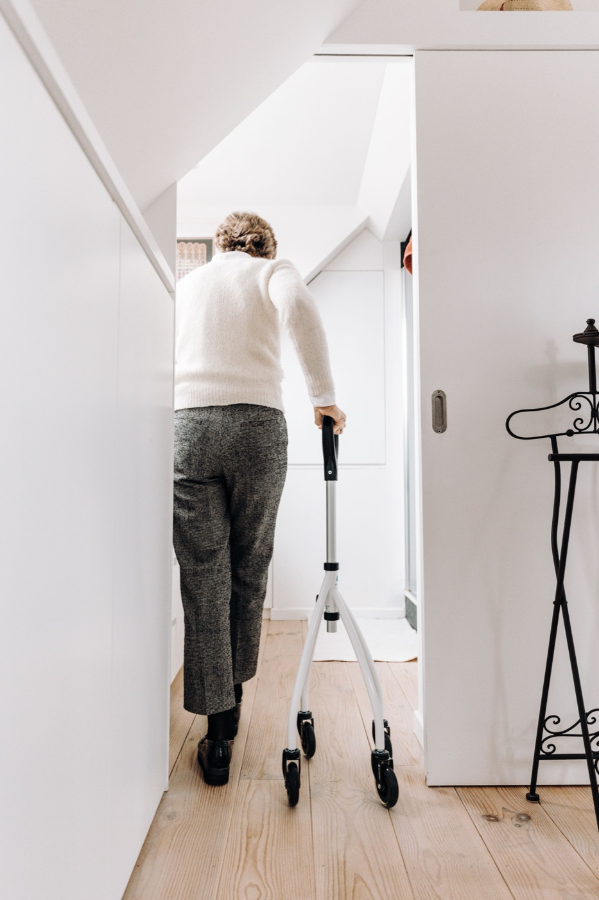
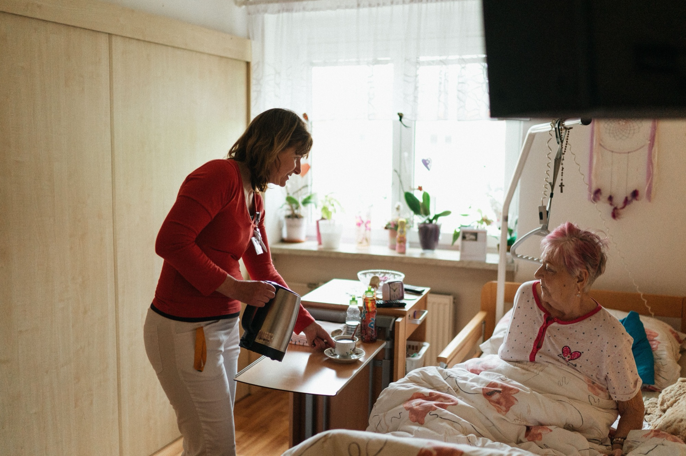
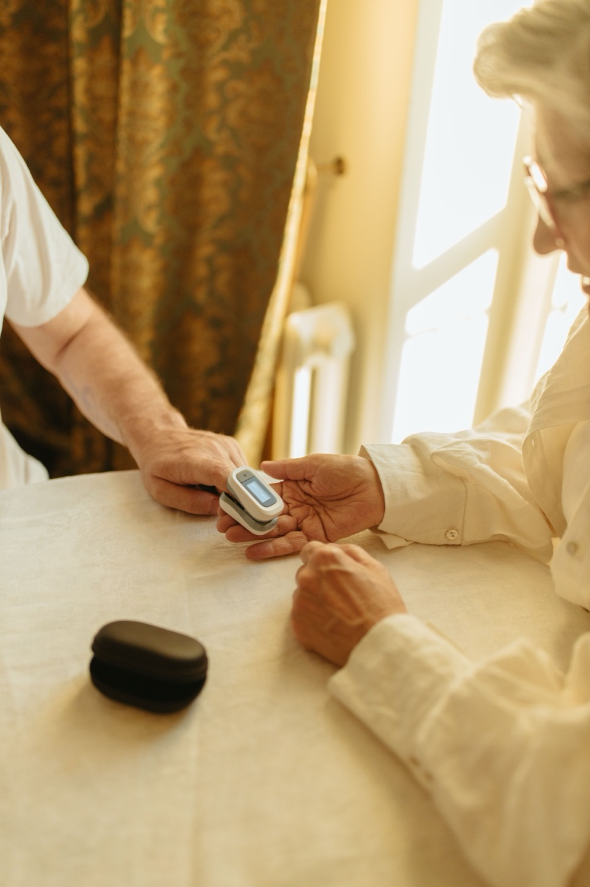

What we took from Grassfeld, and what we changed.
Grassfeld’s site is the structural reference: confident condensed headlines, an ink-and-white base, soft pastel surfaces, a rounded hero container and one simple CTA repeated everywhere. Values below were read from their live CSS. Nonnina keeps the system and swaps the cool fintech mood for warmth.
| Element | Grassfeld (measured) | Nonnina (decision) |
|---|---|---|
| Headline font | Right Grotesk, weight 900, h1 4rem, line-height .92 to 1.04 | Bricolage Grotesque at 75% width, weight 800, line-height .92. Free on Google Fonts, same condensed punch, softer and friendlier curves. |
| Body font | Manrope, 1rem, line-height 1.5, letter-spacing .03em | Manrope, kept. 1.0625rem, line-height 1.6, letter-spacing .01em for older readers. |
| Text colour | #202128 | Ink #202128, kept as the brand’s anchor colour. |
| Surfaces | #f5f7fb grey, pastels #fff3e2 #dff1f3 #e9f3df #e7e3ff #ddecfd | Kept and renamed after Italian kitchen herbs: Camomilla, Menta, Salvia, Glicine, Cielo. Added a warm page tone, Latte #FAF6F0. |
| Accent | Turquoise sparkle stars around the product | One signature accent, Sole #F4B740: the warm spark in the symbol that marks the voice. |
| Buttons | Ink fill or ink outline, radius about .5rem, Manrope 700, “Get Started” everywhere | Same shapes. One CTA everywhere: “Join the waitlist”. Pills are reserved for the senior app and the emergency button. |
| Hero | Full-width container with 2rem radius, soft gradient, product on the right with floating cards | Same container, filled with a real photograph. A warm gradient carries the headline on the left, and two floating cards show the product. |
| Photography | Lifestyle photo background with a UI screenshot layered in front (-bg / -fg) | Kept as the main storytelling device: real moments at home, with one small UI card on top. |
| Page order | Hero, awards, feature grid, alternating feature blocks, security, testimonials, CTA, FAQ, footer | Hero, trust strip, feature grid, alternating blocks, safety (ink section), helpers, FAQ, waitlist, footer. No invented testimonials or stats. |
| Languages | English and Dutch switcher in the header | English first, then German and Italian, with an EN · DE · IT switcher in the header. |
A grandmother’s warmth, a family’s peace of mind.
“Nonnina” is Italian for “little grandma”: the voice everyone trusts, at the centre of the family table. The product talks with older people who live alone, keeps them company, and tells the family the moment something is wrong.
Never alone at home. Never in the dark for the family.
Our mission: help older people live safely and happily in their own home for longer, with one button, a warm voice and a family that always knows what is going on.
A doorway and a spark.
The symbol is a lowercase n drawn as the arch of a front door, because Nonnina lives at home. The warm spark is the voice: it lights up when Nonnina listens. The symbol takes the place of the “N”: the logo reads Nonnina as symbol + “onnina”. The spark lives only in the symbol.

onninaSymbol sizes
App icon, favicon and the senior tablet launcher. Minimum 16 px on screen; below 24 px drop the spark only if it blurs.
Rules
assets/nonnina-mark.svg and assets/nonnina-mark-light.svg.Don’t
Stretch or squash it
Recolour the symbol (red means emergency)
Outline or add effects
Use low-contrast colours
Ink, warm paper and a little sun.
The palette is mostly white and Latte, anchored by Ink. Pastels give each topic its own surface. Sole is a spark, never a background for long text. Allarme red is reserved for the emergency feature, nowhere else.
Core
Pastel surfaces
Functional
Contrast ratios are calculated live in this page against white and Ink. Body text must reach 4.5:1 (AA) on the website and 7:1 (AAA) in the senior app.
Big, condensed headlines. Calm, readable text.
Two Google Fonts, both free and with full Latin Extended for German umlauts and Italian accents. Headlines borrow Grassfeld’s compressed rhythm; body text stays open and generous for older eyes.
Width 75%, weight 800 (headlines) and 600 (soft second line). Line-height .92 to 1. Tracking −2%. Sentence case, never all caps.
Weights 400, 600, 800. Line-height 1.6. Tracking +1%. Minimum 16 px on the website, 24 px in the senior app.
Nonnina is a voice companion for older people who live at home. She talks, reminds and listens every day, and tells the family the moment something is wrong.
Care insurance benefits must be claimed one by one, and many families miss support they are entitled to. Nonnina turns a worried phone call into a clear list of next steps.
Tippen und sprechen
Real homes, real hands, warm light.
Photography carries the emotion; the interface stays in small cards on top. Every image shows a real moment of care at home: hands, tea, a walk, a check-up. Each photo has one job on the site.



Do
Don’t
The first ten seconds.
The hero follows Grassfeld’s container: rounded, full width, headline left, product right. The photograph does the emotional work and two floating cards explain the product. Switch EN · DE · IT in the top bar to see every language.
One button for Nonna.Peace of mind for the whole family.
Nonnina is a voice companion for older people who live at home. She talks, reminds and listens every day, and tells the family the moment something is wrong.
Desktop
Hands photo, focal point right of centre. Latte gradient from the left keeps the headline at AAA contrast. Floating cards sit on the dark sleeve area, away from the hands.
Mobile
Swap to the vertical park photo. Headline at the bottom in white on an Ink gradient, a single Sole button, the language pill top right.
Motion
Cards fade up 16 px with a 120 ms stagger, the voice bars move, the sparks twinkle. All of it stops with reduced motion.
Headline rules
Two lines: the promise to the senior, then the promise to the family. Second line lighter (weight 600, Graphite).
CTA
Primary is always “Join the waitlist” in Ink. Secondary is outlined and scrolls to “How it works”.
Language
English by default; DE and IT from the browser language or the EN · DE · IT switcher, remembered locally.
Grassfeld’s rhythm, Nonnina’s story.
Same sequence of big hero, quick proof, grid of features, then alternating deep dives. Every section ends with the one CTA. Photo assignments follow section 06.
- HeaderLogo · How it works · Safety · For families · For helpers · About · EN/DE/IT · “Join the waitlist” (outline).
- HeroRounded container, hands photo, two-line headline, two CTAs, three trust pills, two floating product cards.
- Trust stripReplaces Grassfeld’s awards: “Made in Stuttgart · Data in the EU · German & Italian · Free during the pilot”. No invented logos or numbers.
- Feature gridSix pastel tiles: Talk · Reminders · Emergency · Family alerts · Paperwork · Helpers.
- Everyday companionAlternating block. Photo background with a reminder card in front.
- Health routinesMedication, visits, check-ups, all spoken aloud.
- SafetyInk section. Fall, chest pain, cannot breathe: family alerted in seconds, 112 one tap away. Note: not an emergency service.
- For familiesAlerts in real time, paperwork and money step by step.
- For helpersSign up free, get verified, get matched with families nearby.
- FAQSmartphone? Languages? Emergency? Who sees the data? Cost?
- WaitlistEmail, “I am a…”, city, message. Latte card, Ink button.
- FooterLogo + language · Product / Company / Legal columns · “Not an emergency service. In an emergency call 112.” · © 2026 Nonnina.
A small kit, used everywhere.
Buttons, tiles, layered feature blocks and the Ink safety section. Radii: .5rem buttons, 1rem inputs, 1.25rem cards, 2rem sections, pills only for chips and the senior app.
Talk
One button. A warm voice that answers in German or Italian.
Reminders
Tablets, water, appointments, spoken aloud.
Emergency
Family alerted in seconds. 112 one tap away.
Family alerts
Real-time updates and a short daily summary.
Paperwork
Care insurance, contracts, money: step by step.
Helpers
Verified local helpers when the family is far away.
Reminders that sound like family.
- “Maria, it is six o’clock. Time for your tablets.”
- Confirms out loud, and tells Anna if a dose is missed.
- Large captions of everything Lina says.
When something is wrong, the family knows in seconds.
Three independent triggers: the voice assistant, a keyword safety net in code, and a red Help button that always works. Nonnina never calls 112 by itself; it makes 112 one tap away.
Nonnina is not an emergency service and does not replace 112.
Short sentences. Formal and kind.
English leads the website, German and Italian are equal citizens. In the senior app we always use the formal form (Sie, Lei), one idea per sentence, and we never use technical words.
- Tagline
- Never alone at home.
- CTA
- Join the waitlist
- Safety line
- When something is wrong, the family knows in seconds.
- Disclaimer
- Not an emergency service. In an emergency call 112.
- Tagline
- Nie allein zu Hause.
- CTA
- Auf die Warteliste
- Senior app
- Guten Morgen, Maria! · Tippen und sprechen · Hilfe
- Disclaimer
- Kein Notdienst. Im Notfall 112 anrufen.
- Tagline
- Mai soli a casa.
- CTA
- Iscriviti alla lista d’attesa
- Senior app
- Buongiorno, Maria! · Tocca e parla · Aiuto
- Disclaimer
- Non è un servizio di emergenza. In caso di emergenza chiama il 112.
We say
- “Anna has been notified.”
- “Please do not stand up. Help is coming.”
- “Your family will take care of it.”
- “Orientation, not legal or medical advice.”
We never say
- “AI-powered smart elderly monitoring solution.”
- “Don’t worry, no need to call 112.”
- Statistics without a source.
- Diminutives that talk down to older people.
The brand at 82 years old.
On the tablet the brand becomes quieter: Latte background, Ink button, one Sole glow, red only for Help. 24 px minimum text, 88 px minimum touch targets, AAA contrast.